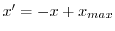

The pairwise similarity of sequences in the current alignment is evaluated using a user specified residue-residue scores file.
The residue-residue scores, including gap-residue, and gap-gap scores, are read from file rr_file. The sequence pair score is equal to the average pairwise residue-residue score for all alignment positions that have at most max_gaps_match gaps (1 by default). If the gap-residue and gap-gap scores are not defined in matrix_file, they are set to the worst and best residue-residue score, respectively. If matrix_file is a similarity matrix, it is converted into a distance matrix (  ).
The comparison matrix is written in the PHYLIP format to file matrix_file.
The family variability as a function of alignment position is calculated as the RMS deviation of all residue - residue scores at a given position, but only for those pairs of residues that have at most max_gaps_match gaps (0, 1, or 2). The variability is written to file variability_file, as is the number of pairwise comparisons contributing to each positional variability. The variability, scaled by 0.1, is also written into the Bfield of the model mdl, which must correspond to the first sequence in the alignment.
Example: See alignment.id_table() command.